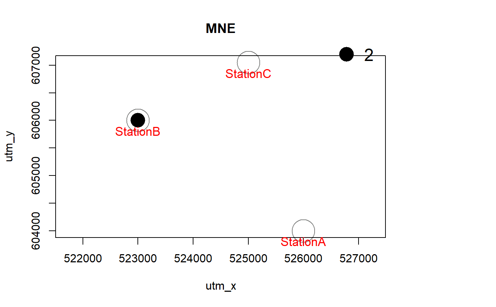

Generate maps of observed species richness and species presences by station
detectionMaps.RdGenerates maps of observed species richness and species presence by species and station. Output can be R graphics, PNG graphics or a shapefile for use in GIS software.
detectionMaps(CTtable, recordTable, Xcol, Ycol, backgroundPolygon, stationCol = "Station", speciesCol = "Species", speciesToShow, richnessPlot = TRUE, speciesPlots = TRUE, addLegend = TRUE, printLabels = FALSE, smallPoints, plotR = TRUE, writePNG = FALSE, plotDirectory, createPlotDir = FALSE, pngMaxPix = 1000, writeShapefile = FALSE, shapefileName, shapefileDirectory, shapefileProjection )
Arguments
| CTtable | data.frame. contains station IDs and coordinates |
|---|---|
| Xcol | character. name of the column specifying x coordinates in |
| Ycol | character. name of the column specifying y coordinates in |
| backgroundPolygon | SpatialPolygons or SpatialPolygonsDataFrame. Polygon to be plotted in the background of the map (e.g. project area boundary) |
| stationCol | character. name of the column specifying station ID in |
| recordTable | data.frame. the record table created by |
| speciesCol | character. name of the column specifying species in |
| speciesToShow | character. Species to include in the maps. If missing, all species in |
| writePNG | logical. Create PNGs of the plots? |
| plotR | logical. Create plots in R graphics device? |
| plotDirectory | character. Directory in which to save the PNGs |
| createPlotDir | logical. Create |
| richnessPlot | logical. Generate a species richness plot? |
| speciesPlots | logical. Generate plots of all species number of independent events? |
| printLabels | logical. Add station labels to the plots? |
| smallPoints | numeric. Number by which to decrease point sizes in plots (optional). |
| addLegend | logical. Add legends to the plots? |
| pngMaxPix | integer. number of pixels in pngs on the longer side |
| writeShapefile | logical. Create a shapefile from the output? |
| shapefileName | character. Name of the shapefile to be saved. If empty, a name will be generated automatically. |
| shapefileDirectory | character. Directory in which to save the shapefile. |
| shapefileProjection | character. A character string of projection arguments to use in the shapefile. |
Details
The column name stationCol must be identical in CTtable and recordTable and station IDs must match.
Shapefile creation depends on the packages sp and rgdal. Argument shapefileProjection must be a valid argument of CRS. If shapefileProjection is undefined, the resulting shapefile will lack a coordinate reference system.
Value
An invisible data.frame with station coordinates, numbers of events by species at each station and total species number by station. In addition and optionally, R graphics or png image files.
References
A great resource for CRS arguments is http://spatialreference.org/. Use the Proj4 string as shapefileProjection argument.
Examples
# load station information data(camtraps) # load record table data(recordTableSample) # create maps Mapstest <- detectionMaps(CTtable = camtraps, recordTable = recordTableSample, Xcol = "utm_x", Ycol = "utm_y", stationCol = "Station", speciesCol = "Species", writePNG = FALSE, plotR = TRUE, printLabels = TRUE, richnessPlot = TRUE, addLegend = TRUE )if (FALSE) { # with a polygon in the background # make a dummy polygon for the background poly1 <- Polygon(cbind(c(521500,526500,527000, 521500),c(607500, 608000, 603500, 603500))) poly2 <- Polygons(list(poly1), "s1") poly3 <- SpatialPolygons(list(poly2)) Mapstest2 <- detectionMaps(CTtable = camtraps, recordTable = recordTableSample, Xcol = "utm_x", Ycol = "utm_y", backgroundPolygon = poly3, # this was added stationCol = "Station", speciesCol = "Species", writePNG = FALSE, plotR = TRUE, printLabels = TRUE, richnessPlot = TRUE, addLegend = TRUE ) }